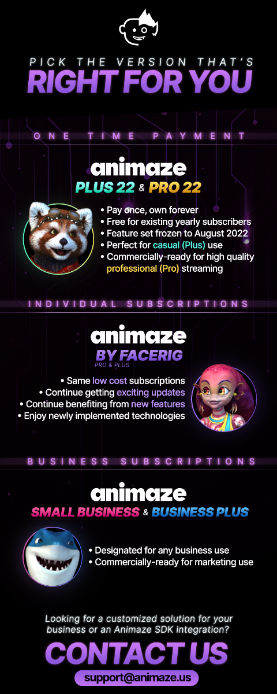

What’s the difference between the Animaze subscriptions and the one-time purchase DLCs?
Animaze Plus/Pro 2022 is a legacy version from back in 2022 and is no longer available for purchase.
Everything in it and more can be found in the more modern Animaze Plus/Pro 2024-2026.
Up to date information can be found here: All about differences between Plus / Pro 22, 23, 24, and 26 and the Animaze Subscription Service
The one-time purchase Animaze products, Animaze Plus 22, the perfect app for casual streamers, and Animaze Pro 22, which includes commercial rights for professional streamers, are feature-locked versions of the Animaze app. This means that these Steam exclusive DLCs will grant you permanent access to the features the Animaze app had in August 2022, without any further updates.
The Animaze subscriptions get updates in a more ongoing manner. If you wish to opt for the recurrent updates, and new app features and to support the team in charge of developing the Animaze products, this is the way to go!
